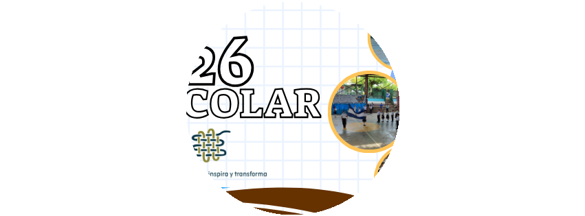

EDUCACIÓN TERESIANA QUE INSPIRA Y TRANSFORMA — REPARTO SCHICK, MANAGUA
El Colegio Enrique de Ossó, es una Comunidad Educativa que se caracteriza por ofrecer una formación integral de calidad, humanizadora, liberadora, transformadora, y promover liderazgo compartido y un estilo de relación inclusivo-respetuoso.
Mantente al día con las últimas novedades, eventos y la programación de actividades correspondientes al mes de Agosto 2026.
Visitar Página Oficial en Facebook